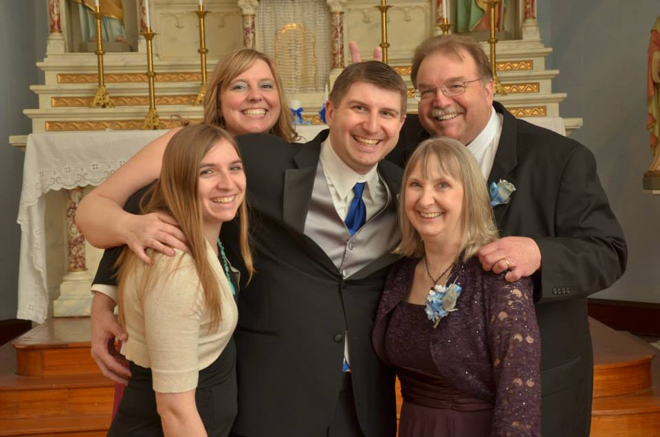

Welcome to Mike Staub's Page!
Background:


I was born in Iowa City, Iowa. My parents are Herb and Mary Staub. I am the middle child and have two sisters, Julie and Kristen.
I earned a Bachelor's of Business Administration in 2001. After working in Medical Customer Service/Billing for ten years I have returned to school full time to earn a second Bachelor's in Management Information Systems.
My girlfriend Kari Griggs and I became engaged on the beach in Hawaii at Sunset in July 2013. We were married in March 2014.
Interests:
Paintball: My first game of paintball was with a group of friends in high school and I have continued to play several times each year since. I've also made great friends over the years including two of my groomsmen. In 2000 I opened a paintball retail store in Coralville and a playing field in West Liberty, IA the following year. Both businesses were retired in 2014 but I continue to play.
Traveling: The first trip I planned completely on my own was to Las Vegas which included rock scrambling, kayaking from the base of the Hoover Dam, Jeep off-roading and taking in some shows. Since then I have put together trips to Hawaii, Chicago, Dallas, St Louis and Omaha. Currently my wife and I are planning a trip to Puerto Rico in 2015 for our one year anniversary. I hope to visit Iceland and New Zealand someday.
Movies: Both my sisters and I worked at movie theaters in our teens, therefore our family went to a lot of free movies. I also watch many movies via Netflix and dvds checked out from the library. I love to quote movies and answer movie trivia.
External Links:
- PbNation -- Great information source for everything paintball
- Paintball Access -- Live streaming and archived professional paintball tournaments
- Internet Movie Database -- Huge database of movie info
- Tripadvisor -- Get great travel ideas and read traveler reviews